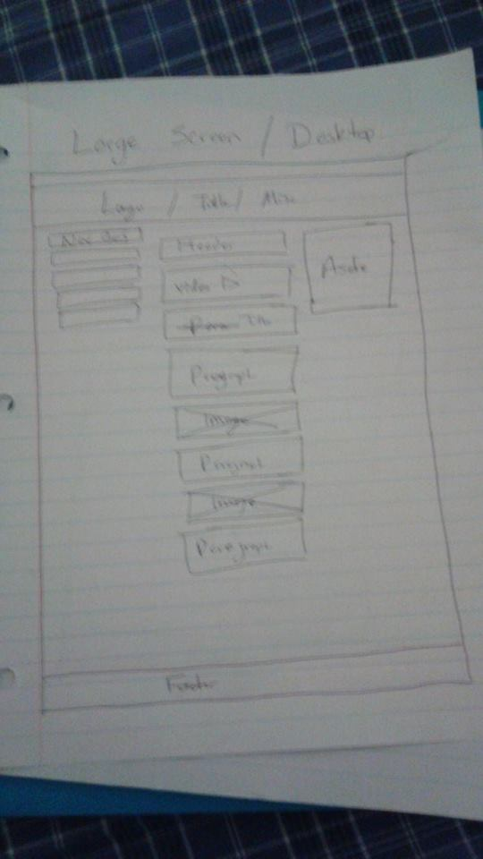
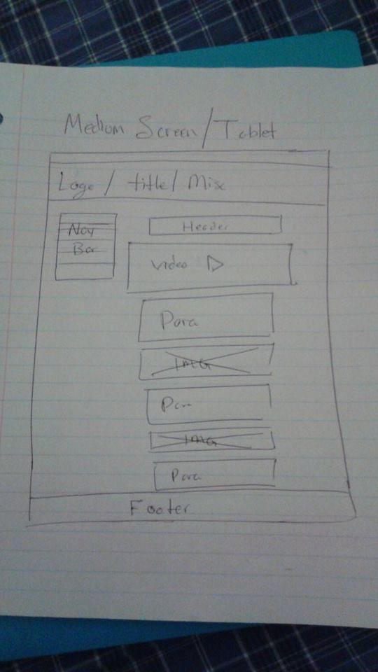
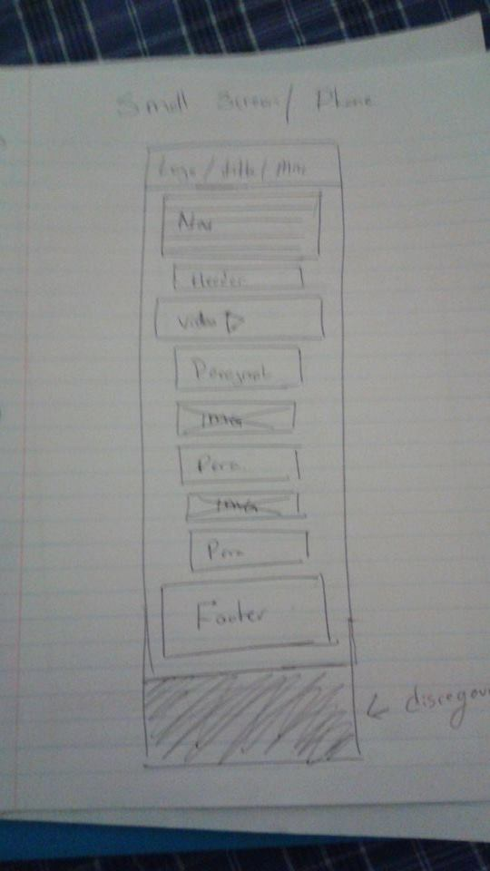

Site Purpose
The purpose of this site is to inform current league of legend players about some of the curretn stratedgies and tactics that currently work in the game.
Target Audience
the Target audience is current League of legends players who have reached the rank of silver to the rank of gold, this encompases roughly 60% of the playerbase. because the game is so popular and has so many fans defineing the audience is hard however most players are generally between the age of 15-25 and male. Keeping this in mind i will keep my coments short and full of content.
Example Persona
Cullins Edward is a 21 year old male college student, Cullins succesfully graduated from high school and is currently working towards a degree in business management, he uses league of legends to connect with other people his age and relax.
Cullins has a fairly high level of technical expertease, he reguraly uses a smart phone, laptop, and tablet. He enjoys browsing for new league websites during his lunch break and when he plays games at night when hes waiting for his game to que up.
Cullins would normally only spend 5-10 minutes per league website, hes looking for a site that will help him implrove his skills and teach him tips and tricks that he doesnt know.
Wireframe Sketches
  Location
The Json data is used in all the pages as the images of the 4 champions, also known as the aside
The HTML5 video is used in the homepage under the purpose statement.